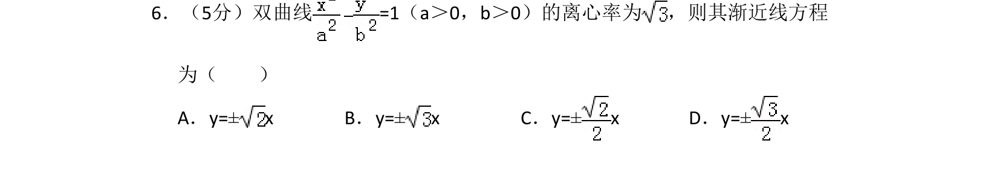
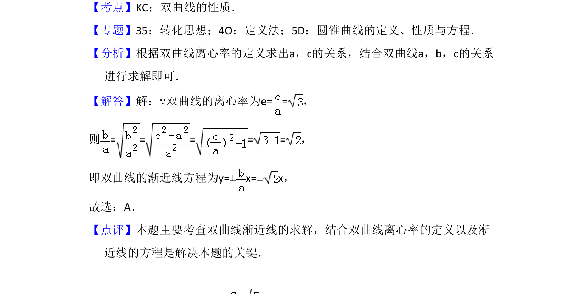

考点：双曲线性质 离心率 渐近线

已知双曲线离心率，求其渐近线方程。

📄 原 PDF 第 4 页：
素材/真题/吉林/2008-2024·（吉林）数学高考真题/2018年高考数学试卷（文）（新课标Ⅱ）（解析卷）.pdf
6．（5分）双曲线=1（a＞0，b＞0）的离心率为 ，则其渐近线方程 为（ ） A．y=±x B．y=±x C．y=±x D．y=±x
【考点】KC：双曲线的性质．菁优网版权所有 【专题】35：转化思想；4O：定义法；5D：圆锥曲线的定义、性质与方程． 【分析】根据双曲线离心率的定义求出a，c的关系，结合双曲线a，b，c的关系 进行求解即可． 【解答】解：∵双曲线的离心率为e= =， 则= = = = =， 即双曲线的渐近线方程为y=±x=±x， 故选：A． 【点评】本题主要考查双曲线渐近线的求解，结合双曲线离心率的定义以及渐 近线的方程是解决本题的关键．